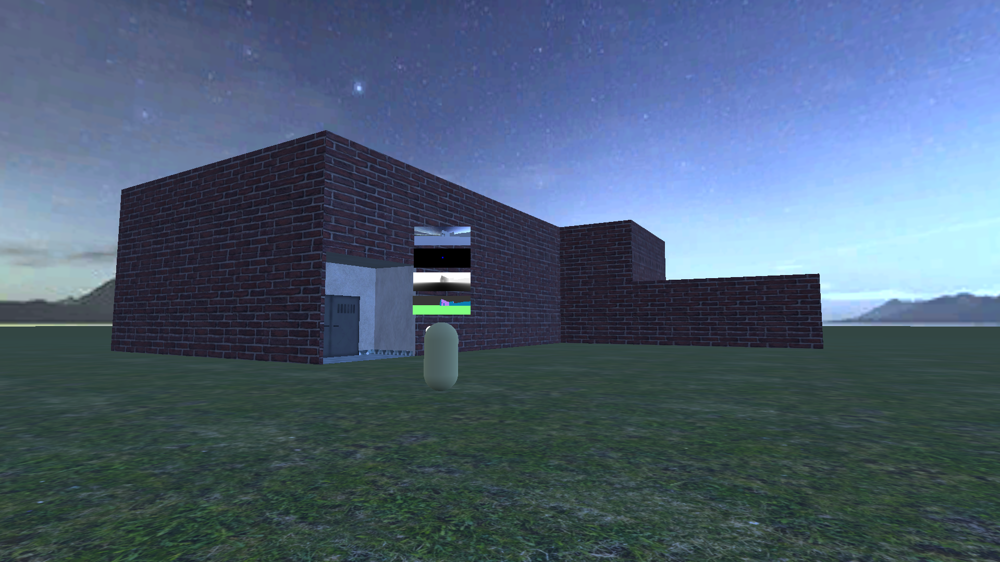
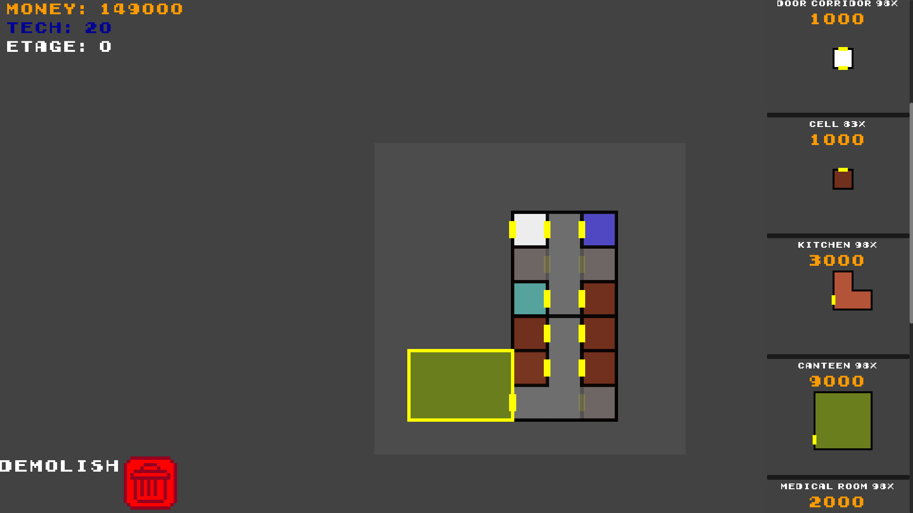
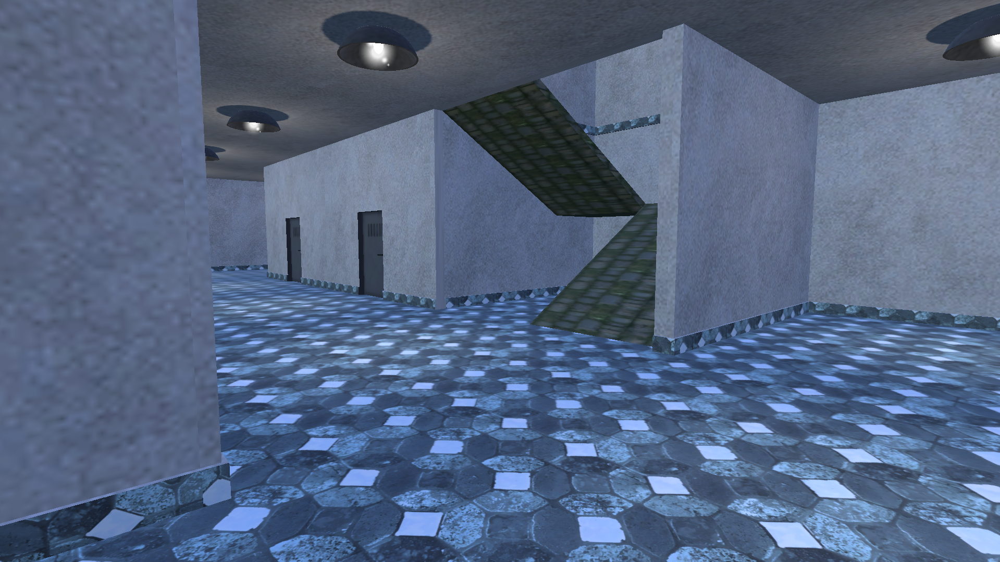
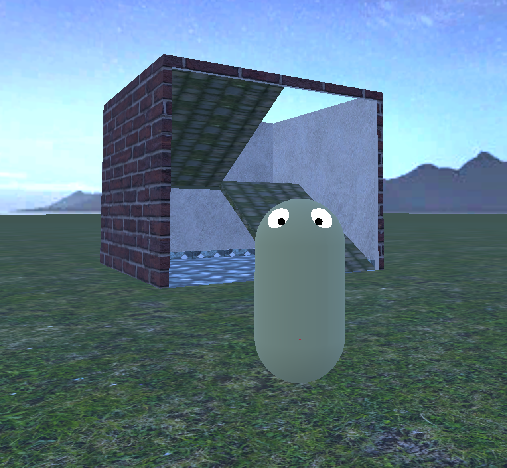
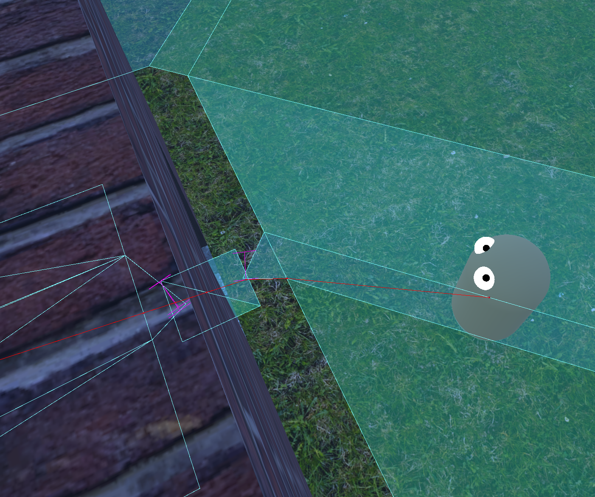
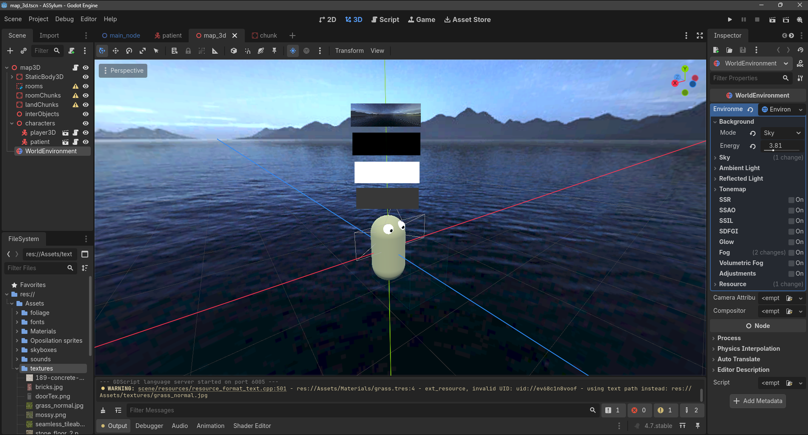
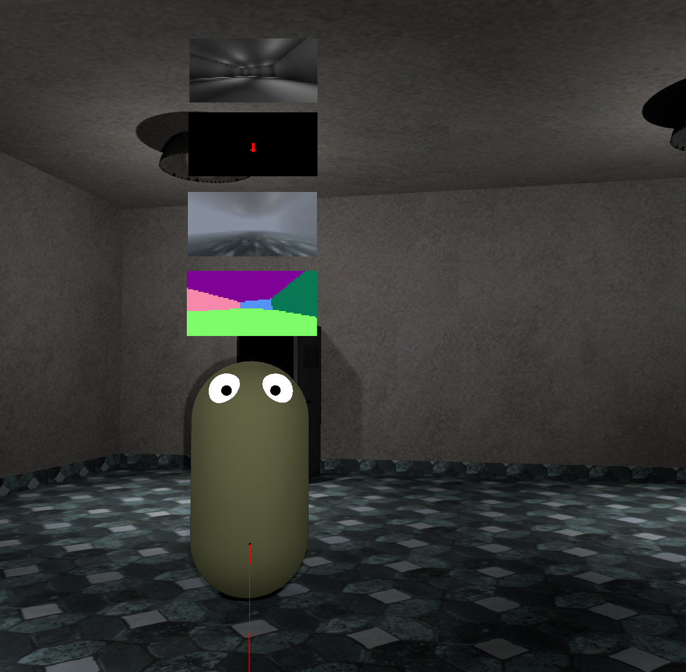

DYNAMIC ENVIRONMENT & AI NAVIGATION
My latest project, that is still in development. The gist of the project is to allow the player to build custom buildings, and then let AI navigate through the environment in an organic fashion.


Here you can see how the 2D build plan can dynamically generate a 3D building. The rooms aren't made from prefabricated models. Every wall is generated separately.


With the AI, first I tried using a Navmesh style of navigation. The problem was the static nature of this system.

Now I'm trying to implement a system that guides the character using several viewports.
-lighting view: determines, if there is enough light for the character to see
-object/character view: shows interactable objects
-depth view: determines, how far certain objects and obstacles are
-normal view: shows collision angles, relative to the character
With these, I'm making a more dynamic system, with which a character can navigate any environment, without any baked Navigation.
